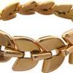
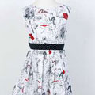

Shopping
Do you live (love) to SHOP? Paris is a shopper's dream, of course, and the "glitterati" will feel quite at home in the Haute Couture shops found on Rue du Faubourg Saint-Honoré and Avenue Montaigne in the 8th arrondissement. Top quality shoes, bags, and leather goods are the province of Rue du Cherche-Midi and Rue de Grenelle in the 6th. Truly trend-setting fashions may be seen in the shops on Rue Etienne Marcel and Place des Victoires bordering the 1st and 2nd arrondissements.
Sadly, the boulevard Champs-Elysées — formerly the bastion of fashion and class — has degenerated into a neon strip of fast food chains, banks, airline offices, malls, and cinemas aimed squarely at the tourists!

WFor a pleasurable and mainstream shopping experience à l'américaine, shoppers should check out the plethora of colossal department stores in Paris. Two of the most famous rivals, Printemps and Galeries Lafayette, may be found side-by-side on Boulevard Haussmann in the 9th arrondissement, carrying designer, brand name and private label merchandise.
JEWELLERY
WFor a pleasurable and mainstream shopping experience à l'américaine, shoppers should check out the plethora of colossal department stores in Paris. Two of the most famous rivals, Printemps and Galeries Lafayette, may be found side-by-side on Boulevard Haussmann in the 9th arrondissement, carrying designer, brand name and private label merchandise.


One of the most renowned places to find treasures in Paris is at the flea market. Paris has three main flea markets of ancient descent, situated around the old gates of the city. The origin of the name refers to the cast-off clothes of royalty which were commonplace in centuries of old, teeming with the little insects.
FASHION
One of the most renowned places to find treasures in Paris is at the flea market. Paris has three main flea markets of ancient descent, situated around the old gates of the city. The origin of the name refers to the cast-off clothes of royalty which were commonplace in centuries of old, teeming with the little insects.